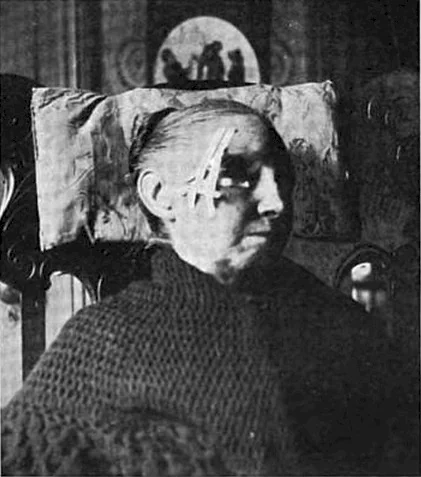
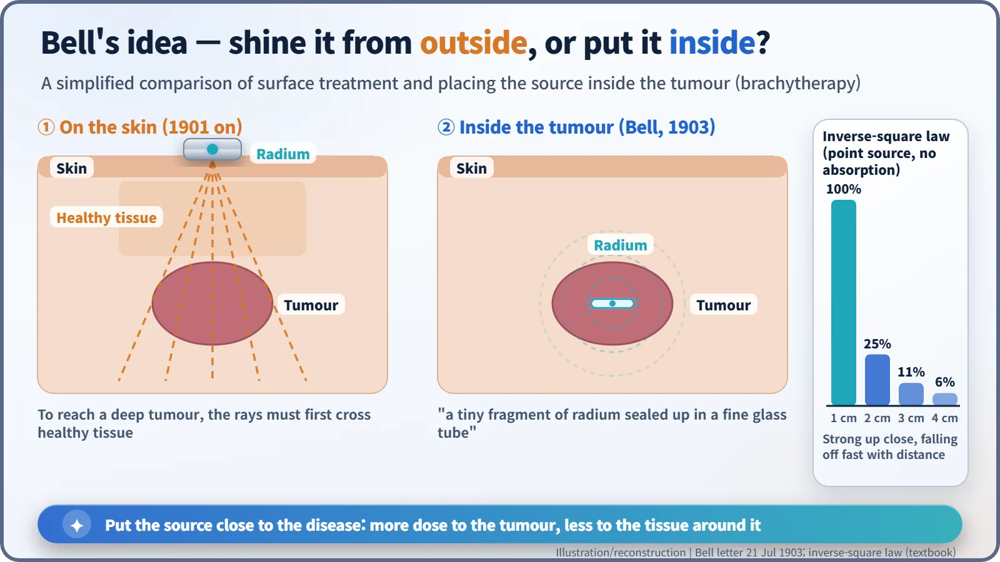
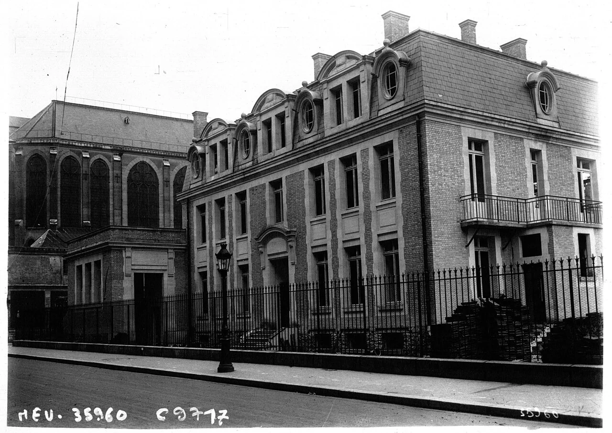
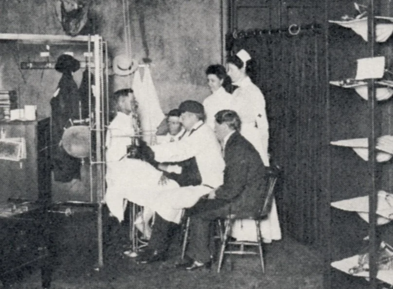
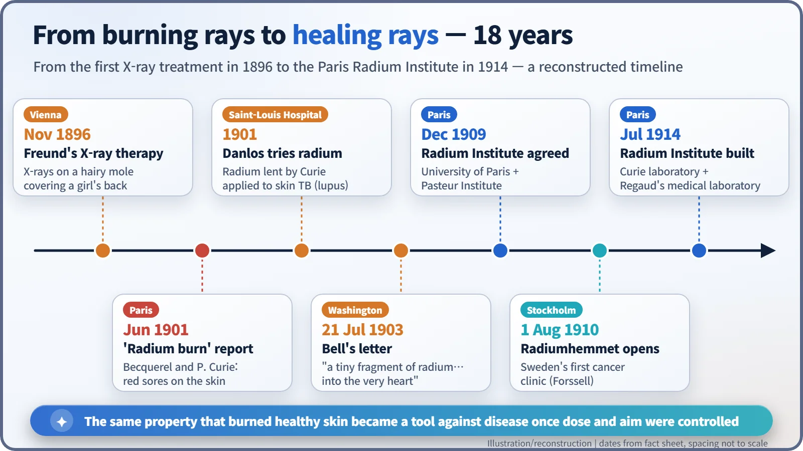

Nuclear History · 024
The Rays That Burned, Turned on Disease — Early Radium Therapy and the Birth of Radiation Medicine
Radium burned the scientists who carried it, and within a few years doctors had learned to aim that same power at disease.
In 1901 radium was found to burn the skin of the scientists who handled it, and doctors quickly asked whether that same destructive power could be turned against disease. Within a few years radium was being laid on skin lesions in Paris, Alexander Graham Bell had proposed putting it inside tumours, and dedicated radium institutes were rising in Paris and Stockholm. The lesson of those years: what separates harm from healing is dose and aim.
A tube beside the eye
A black-and-white photograph in an American medical paper of 1905: an elderly woman in a shawl sits in an armchair, and a small tube, no bigger than a finger joint, is strapped firmly beside her eye. Inside the tube is radium, an element discovered only a few years earlier. Here radium is meant as medicine: she is being treated for a disease of the skin.

Only a few years before, radium had been known first as something that hurt people. In June 1901 Henri Becquerel and Pierre Curie (1859–1906) told the Academy of Sciences in Paris how radium carried on the body or held against an arm had left the skin red and ulcerated about ten days later; their note was titled, in French, Action physiologique des rayons du radium ("the physiological action of radium rays"). Doctors read the news the other way round: if radium could wreck healthy skin like this, could it also destroy diseased tissue?
X-rays opened the door first
The idea had actually started with X-rays. In November 1896, a young Viennese doctor, Leopold Freund (1868–1943), began exposing a five-year-old girl to X-rays. Her back was covered by a large hairy mole. This is often cited as the first medical use of radiation. [1] [7] There is also a story that Emil Grubbe of Chicago treated a breast-cancer patient with X-rays early that same year, but it rests on his own later claims; no reliable record from the time has been found. [8]
Borrowed radium at the Saint-Louis Hospital
Radium's first clinical scene was the dermatology department of the Hôpital Saint-Louis in Paris. Pierre Curie lent radium sources to physicians, and the first of them is usually said to be Henri-Alexandre Danlos (1844–1912). In 1901 Danlos and a colleague named Bloch reported treating lupus, a form of tuberculosis of the skin, by placing radium directly on the lesions. (Sources disagree on Bloch's first name: Paul or Eugène.) [1]
Radium worked on shallow skin lesions, but results against cancers deep in the body were disappointing. Applied from outside, the rays had to pass through healthy tissue before they reached the tumour.
A telephone inventor's letter
The neatest answer came from someone who was not a doctor. On 21 July 1903, Alexander Graham Bell (1847–1922), the inventor of the telephone, wrote from Washington to a physician, Dr Z. T. Sowers. Bell pointed out that the rays "have been applied externally, thus having to pass through healthy tissues of various depths in order to reach the cancerous matter", and went on:
"There is no reason why a tiny fragment of radium sealed up in a fine glass tube should not be inserted into the very heart of the cancer, thus acting directly upon the diseased material. Would it not be worthwhile making experiments along this line?"
The letter appeared in Science at the end of that month. It contains the core idea of what we now call brachytherapy (from the Greek brachys, "short"): putting a sealed radioactive source inside or right next to the tumour. [2]
The physics behind it is simple. Radiation from a small source weakens with the square of the distance. Call the intensity at 1 cm 100; at 2 cm it falls to 25, and at 3 cm to about 11. It is like standing by a campfire: right next to it you are roasting, a few steps back you are merely warm. Put the source inside the tumour, and the tumour gets a strong dose while the surrounding tissue gets much less.

The Radium Institute: physics and medicine under one roof
In December 1909 the University of Paris and the Pasteur Institute agreed to share the cost of a new Radium Institute (Institut du Radium). It had two buildings: a physics and chemistry laboratory led by Marie Curie, and a laboratory led by the physician Claudius Regaud (1870–1940) to study the biological effects of radioactivity and its medical uses. The people who measured radiation and the people who treated patients would work side by side. [5]

The institute was completed in July 1914, but within weeks the First World War broke out, and its full work had to wait until after the war. [4] Meanwhile, in Stockholm, the physician Gösta Forssell had opened Radiumhemmet on 1 August 1910 in a rented apartment, Sweden's first clinic dedicated to cancer. [6]

Between healing and harm
It would be wrong to paint this period as an age of miracles. There were no units for measuring dose and no safety standards, so many treatments were given without proof that they worked, and burns and ulcers were common side effects. The radium waters and cosmetics sold at the same time as health tonics were a separate commercial craze, not medicine.
In his Nobel lecture of 6 June 1905, Pierre Curie noted that radium rays "have been used in the treatment of certain diseases (lupus, cancer, nervous diseases)" and that "in certain cases their action may become dangerous". Still, he ended: "I am one of those who believe with Nobel that mankind will derive more good than harm from the new discoveries." (The lecture was given in French; this is the English translation published by the Nobel Foundation.) [3]
What turned that hope into reality came down to two things: how much radiation (dose) and where it goes (aim). Radium was later replaced by other sources, but brachytherapy, placing the source beside the tumour, is still used today, for example against cervical and prostate cancer.
